Nhân vật · 20 mèo
| Ảnh | Tên và ID | Vai trò | Độ hiếm | Vũ khí mặc định |
|---|---|---|---|---|
 | Mướpcat-0 | Vận hành pháo · TANK | ELITE | Paw-47gun-0 |
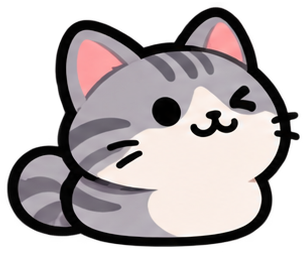 | Khóicat-1 | Bộ binh · MAGE | RARE | Mini Gatlinggun-1 |
 | Bôngcat-2 | Bộ binh · HEALER | ELITE | Bazooka cá ngừgun-2 |
 | Tam Thểcat-3 | Vận hành pháo · WARRIOR | RARE | Súng trường trinh sátgun-3 |
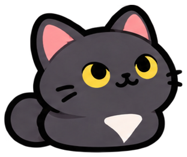 | Muncat-4 | Bộ binh · ASSASSIN | ELITE | Shotgun đỏgun-4 |
 | Xiêmcat-5 | Bộ binh · RANGER | RARE | Súng plasmagun-5 |
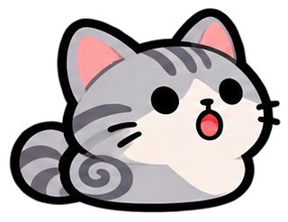 | Vằncat-6 | Vận hành pháo · WARRIOR | COMMON | Súng phun lửagun-6 |
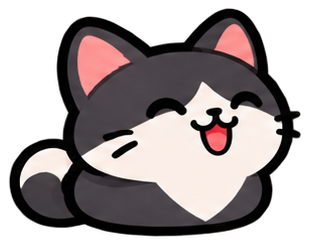 | Tuxcat-7 | Vận hành pháo · TANK | COMMON | Súng phóng lựugun-7 |
 | Mochicat-8 | Vận hành pháo · HEALER | RARE | Nỏ thợ săngun-8 |
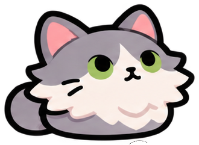 | Mâycat-9 | Bộ binh · RANGER | COMMON | Drone bỏ túigun-9 |
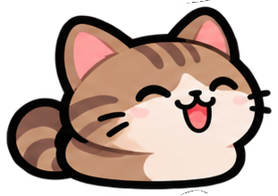 | Cà Phêcat-10 | Bộ binh · WARRIOR | COMMON | Súng phóng lựugun-7 |
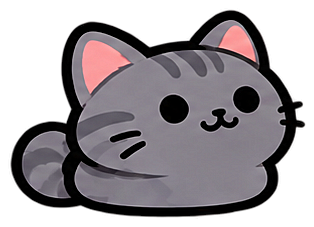 | Thancat-11 | Vận hành pháo · TANK | COMMON | Paw-47gun-0 |
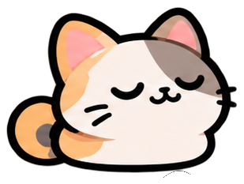 | Kem Dâucat-12 | Bộ binh · HEALER | COMMON | Súng plasmagun-5 |
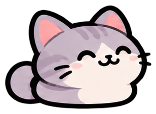 | Oải Hươngcat-13 | Vận hành pháo · MAGE | COMMON | Súng trường trinh sátgun-3 |
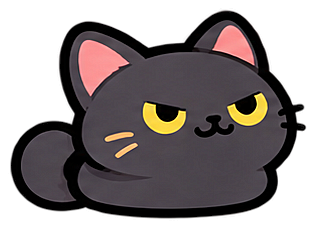 | Bóng Đêmcat-14 | Bộ binh · ASSASSIN | RARE | Shotgun đỏgun-4 |
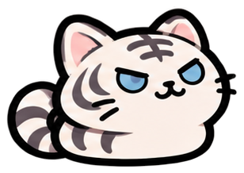 | Bạch Hổcat-15 | Vận hành pháo · WARRIOR | ELITE | Mini Gatlinggun-1 |
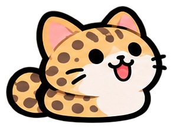 | Báo Đốmcat-16 | Bộ binh · RANGER | ELITE | Nỏ thợ săngun-8 |
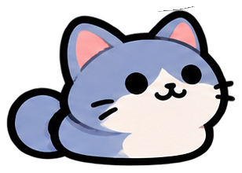 | Lamcat-17 | Vận hành pháo · MAGE | RARE | Drone bỏ túigun-9 |
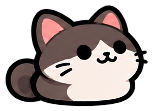 | Sô-cô-lacat-18 | Bộ binh · TANK | RARE | Bazooka cá ngừgun-2 |
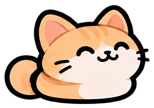 | Đàocat-19 | Bộ binh · HEALER | ELITE | Súng phun lửagun-6 |
Vũ khí · 40 mẫu
THÁP PHÁO · 10
| Ảnh | Tên và ID | Mô tả trong catalog |
|---|---|---|
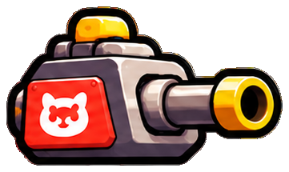 | Pháo xuyên giápturret-0 | Đạn pháo nổ, bỏ qua một phần giáp. |
 | Pháo nòng đôiturret-1 | Hai viên bắn lệch nhịp, tập trung một mục tiêu. |
 | Chùm tên lửaturret-2 | Ba tên lửa bám mục tiêu; nổ lan. |
 | Gatling cầu vồngturret-3 | Đạn liên thanh; tốc độ cao, độ tản nhỏ. |
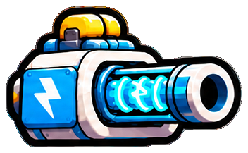 | Pháo ionturret-4 | Chùm sáng xuyên hàng quái; phá giáp. |
 | Hỏa longturret-5 | Phun lửa hình nón; thiêu đốt liên tục. |
 | Cối cầu vồngturret-6 | Đạn cầu vồng bay cao rồi nổ rộng. |
 | Mắt đại bàngturret-7 | Ngắm quái ít máu; đạn xuyên giáp chính xác. |
 | Tesla liên hoànturret-8 | Sét giật tối đa bốn mục tiêu, gây choáng. |
 | Trạm chỉ huyturret-9 | Điều khiển hai drone bắn đạn dẫn đường. |
VŨ KHÍ CÁ NHÂN · 10
| Ảnh | Tên và ID | Mô tả trong catalog |
|---|---|---|
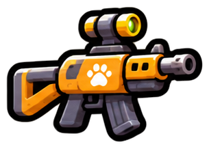 | Paw-47gun-0 | Loạt ba viên đạn từ mèo bộ binh. |
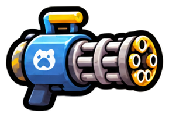 | Mini Gatlinggun-1 | Bắn liên thanh, ưu tiên quái bay. |
 | Bazooka cá ngừgun-2 | Tên lửa bám đuôi, nổ lan. |
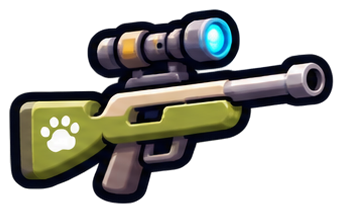 | Súng trường trinh sátgun-3 | Một phát đạn tốc độ cao, xuyên hai quái. |
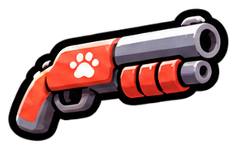 | Shotgun đỏgun-4 | Chùm năm viên tỏa quạt ở cự ly gần. |
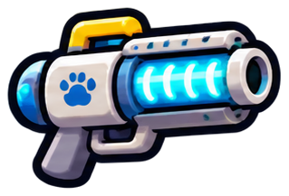 | Súng plasmagun-5 | Quả cầu plasma nổ, xuyên giáp. |
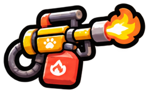 | Súng phun lửagun-6 | Ngọn lửa duy trì thiêu đốt. |
 | Súng phóng lựugun-7 | Lựu đạn cầu vồng, sát thương vùng. |
 | Nỏ thợ săngun-8 | Mũi tên xuyên hai mục tiêu, gây chảy máu. |
Drone bỏ túigun-9 | Drone cá nhân bay lên và khóa quái bay. |
CHIM CHIẾN · 20
| Ảnh | Tên và ID | Mô tả trong catalog |
|---|---|---|
 | Sẻ Gatlingpack-0 | Xả đạn liên thanh từ chim chiến. |
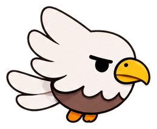 | Đại bàng hỏa tiễnpack-1 | Bốn quả đạn tỏa ra rồi bám mục tiêu. |
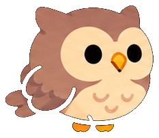 | Cú đại bácpack-2 | Đạn pháo hạng nặng, nổ lan. |
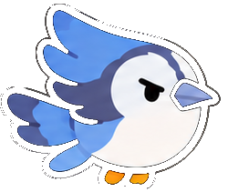 | Giẻ cùi Teslapack-3 | Sét chuyền qua ba mục tiêu. |
 | Quạ tên lửapack-4 | Hai tên lửa dẫn đường. |
 | Phượng hoàng lửapack-5 | Phun lửa và đốt quái. |
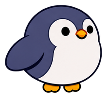 | Cánh cụt băngpack-6 | Đạn băng làm chậm 65% trong ba giây. |
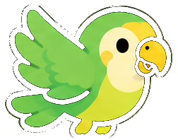 | Vẹt lá độcpack-7 | Mây độc lan rộng, gây độc sáu giây. |
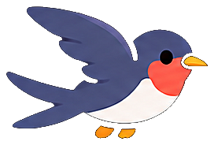 | Én cưa vòngpack-8 | Lưỡi cưa quay, xuyên ba quái. |
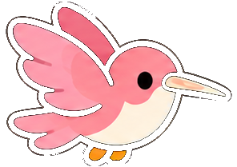 | Chim ruồi khoanpack-9 | Mũi khoan xuyên giáp dày. |
Sơn ca laserpack-10 | Tia laser xuyên đội hình. | |
 | Vẹt Ara plasmapack-11 | Cầu năng lượng nổ lớn. |
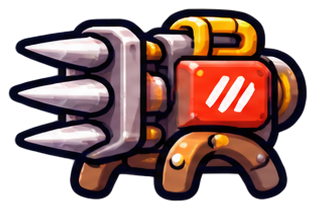 | Mòng biển vuốt théppack-12 | Ba lưỡi vuốt lao ra ở cự ly ngắn. |
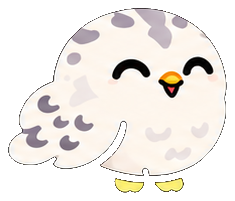 | Cú tuyết hộ vệpack-13 | Phát xung khiên bảo vệ pháo đài hai giây. |
 | Hồng hạc trọng lựcpack-14 | Kéo quái lại quanh điểm va chạm, làm chậm. |
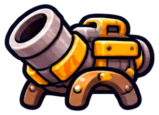 | Toucan súng cốipack-15 | Đạn rơi từ trên cao, nổ vùng rộng. |
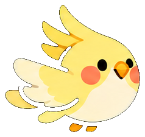 | Vẹt mào thiện xạpack-16 | Xuyên giáp, ưu tiên quái tinh anh. |
 | Quạ ôm bompack-17 | Bom bay chậm, vụ nổ diện rộng. |
 | Giẻ cùi tinh thạchpack-18 | Năm mảnh tinh thạch tỏa quạt. |
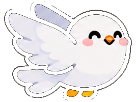 | Bồ câu cứu thươngpack-19 | Hồi máu pháo đài và tăng năng lượng. |
Quái đồng hành · 20 loài
Mỗi loài dùng chung ID với enemy. Ảnh ở đây là sprite tĩnh của Sổ quái.
| Ảnh | Loài và ID | Độ hiếm thu phục | Hệ | Đòn của quái đồng hành |
|---|---|---|---|---|
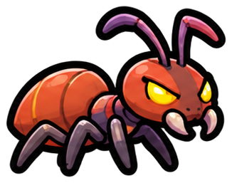 | Kiến tiên phongbug-0 | COMMON | nature | Đàn kiến |
 | Sói bóng đêmbeast-0 | RARE | dark | Nanh đêm |
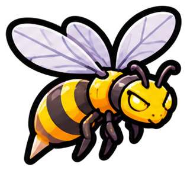 | Ong sát thủbug-4 | COMMON | nature | Kim chích |
 | Bọ sừng đỏbug-1 | RARE | earth | Giáp va |
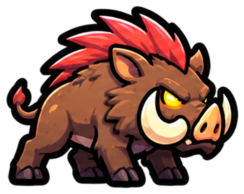 | Lợn rừng cuồng nộbeast-1 | RARE | earth | Húc |
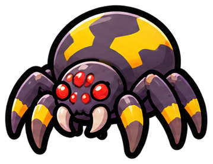 | Nhện giăng tơbug-2 | COMMON | dark | Tơ |
 | Bọ ngựa đaobug-3 | RARE | nature | Đao nhảy |
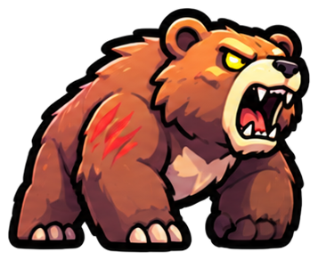 | Gấu cuồng chiếnbeast-2 | ELITE | fire | Cú vồ |
 | Ấu trùng đấtbug-5 | COMMON | earth | Khoan đất |
 | Hổ kiếmbeast-4 | ELITE | fire | Nhát kiếm |
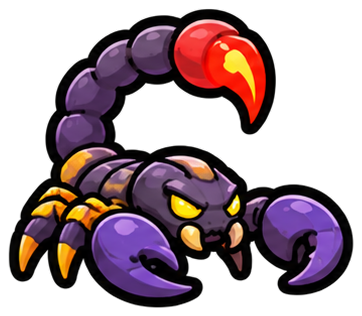 | Bọ cạp độcbug-6 | RARE | poison | Nọc |
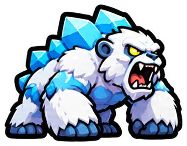 | Khỉ băngbeast-3 | ELITE | ice | Băng ném |
 | Bướm thôi miênbug-7 | ELITE | poison | Bụi ảo |
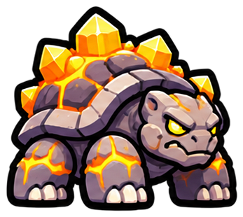 | Rùa dung nhambeast-5 | LEGENDARY | fire | Dung nham |
 | Tê giác bọc giápbeast-6 | LEGENDARY | earth | Húc giáp |
 | Bọ tinh thạchbug-8 | ELITE | crystal | Mảnh pha lê |
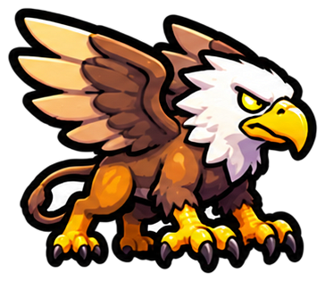 | Đại bàng sư tửbeast-7 | LEGENDARY | wind | Lông vũ |
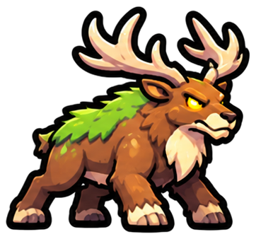 | Hươu cổ thụbeast-9 | LEGENDARY | nature | Hào quang |
 | Bọ chúa giáp gaibug-9 | LEGENDARY | poison | Đạn độc chúa |
 | Bạo long hắc nguyệtbeast-8 | MYTHIC | dark | Hơi rồng |
Enemy · 20 loài
19 quái thường và 1 trùm. Bảng ghi loài được lên lịch theo ải chiến dịch và đợt Classic. Ảnh lấy từ frame idle đầu tiên của sprite sheet Unity.
Đối thủ mô phỏng trong Đấu trường · 6
Ảnh ở cột đầu là hình trên danh sách Đấu trường. Khi vào trận, AI dùng đội quái theo tiến độ, bỏ beast-8 khỏi đội.
Trang bị
Trang bị mèo nhận khi thắng ải lần đầu · 5
| Ảnh | Tên và ID | Ô trang bị | Ải |
|---|---|---|---|
Mini Gatlinggun-1 | Vũ khí | 02 · Đường mòn sương | |
 | Mũ giápgear-helm | Mũ | 03 · Bìa rừng xanh |
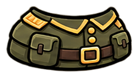 | Áo giápgear-chest | Áo | 04 · Cổng đá cổ |
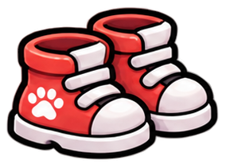 | Giày hành quângear-boots | Giày | 06 · Hẻm núi gió |
Shotgun đỏgun-4 | Vũ khí | 07 · Xưởng bỏ hoang |
Cổ vật từ ải trùm · 4
Các huy hiệu dùng chung sprite item-artifact.
| Ảnh | Cổ vật và ID | Ải |
|---|---|---|
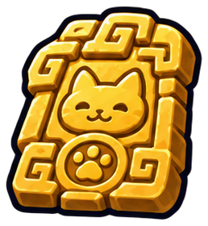 | Huy hiệu Trăng 5artifact-5 | 05 · Bạo long thức giấc |
Huy hiệu Trăng 10artifact-10 | 10 · Trăng máu | |
Huy hiệu Trăng 15artifact-15 | 15 · Tiếng gầm thứ ba | |
Huy hiệu Trăng 20artifact-20 | 20 · Vua Hắc Nguyệt |
Chim chiến nhận khi thắng ải lần đầu · 6
Các module này đã được tính trong nhóm 20 chim chiến ở bảng Vũ khí.
Sprite mũ, giáp, quân phục và giày · 31 key
10 mũ, 10 áo giáp, 10 quân phục và 1 đôi giày. BattleView ghép mũ và quân phục theo vị trí đội hình. Ô trang bị dùng hat-0, armor-0 và gear-boots.
| Mũ | Giáp | Quân phục |
|---|---|---|
Mũ sĩ quan hat-0 | Áo sĩ quan armor-0 |  Áo sĩ quan uniform-0 |
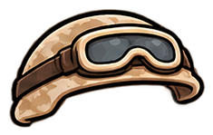 Mũ dã chiến hat-1 |  Áo dã chiến armor-1 | 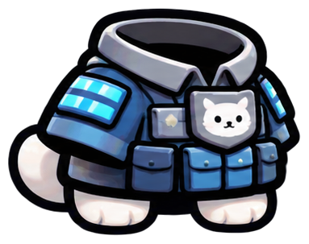 Áo dã chiến uniform-1 |
Mũ hải quân hat-2 | Áo hải quân armor-2 | Áo hải quân uniform-2 |
 Mũ quân y hat-3 | Áo quân y armor-3 |  Áo quân y uniform-3 |
 Mũ lá ngụy trang hat-4 |  Áo ngụy trang armor-4 |  Áo ngụy trang uniform-4 |
 Mũ phi công hat-5 |  Áo phi công armor-5 |  Áo phi công uniform-5 |
 Mũ chiến thuật hat-6 | Áo chiến thuật armor-6 | Áo chiến thuật uniform-6 |
Mũ lái xe hat-7 |  Áo lái xe armor-7 |  Áo lái xe uniform-7 |
Mũ tai bèo hat-8 |  Áo khăn rằn armor-8 |  Áo khăn rằn uniform-8 |
Mũ lông mùa đông hat-9 |  Áo mùa đông armor-9 |  Áo mùa đông uniform-9 |
Giày hành quân gear-boots |
Bảng icon UI/UX · 305 mục
305 dòng trong 40 nhóm, gồm icon, ký tự dựng bằng code, ảnh thu nhỏ và biến thể theme. Một dòng có thể có nhiều key và nhiều ảnh. Bấm ảnh để mở file nguồn. Các nhóm ảnh nhân vật, vũ khí, quái và trang bị trong bảng này có thể trùng với danh mục gameplay.
Giao diện đang dùng · 74 mục
Điều hướng chính
| Ảnh | Tên | Key hoặc vị trí | Ghi chú |
|---|---|---|---|
| Thành mèo | Interface/Cats/Tab-fortress | Tháp thành màu vàng, mở khu Gọi đồng đội, Tiếp tế và Đấu trường. Cùng hình mở Pháo đài trong Doanh trại. | |
| Đấu trường | item-arenaToken | Huy hiệu vàng hình cúp có dải ruy băng đỏ, dùng cho lối vào Đấu trường và đơn vị huy hiệu. | |
| Hành quân và Bản đồ | Map / icon_map | Bản đồ gấp có ghim vị trí, dùng ở tab Hành quân và nút mở bản đồ. | |
| Doanh trại | Interface/Cats/Tab-cats | Đầu mèo vàng, mở danh sách đồng đội. | |
| Nhiệm vụ | Calendar_Check / icon_quests | Tờ lịch dấu kiểm, mở bảng nhiệm vụ ngày. | |
| Bách khoa | Book_1_Purple / icon_book | Sách tím, mở Bách khoa. Cùng hình xuất hiện trên thẻ Đội lưu. | |
| Thử thách trăng | Badge_Crown / icon_crown | Vương miện, dùng cho lối tắt Thử thách trăng, nhiệm vụ Đấu trường và phần thưởng XP chỉ huy. | |
| Xuất kích | Battle / icon_battle | Biểu tượng chiến đấu, dùng trên nút Xuất kích và nhiệm vụ thắng trận. |
Các mục Doanh trại
| Ảnh | Tên | Key hoặc vị trí | Ghi chú |
|---|---|---|---|
| Đội hình | Interface/Cats/Tab-squad | Cụm ba nhân vật màu vàng, mở phần bố trí pháo, mèo vận hành và bộ binh. | |
| Kỹ năng | Interface/Cats/Tab-skills | Ngôi sao vàng có tia sáng, mở bộ kỹ năng. | |
| Quái thú | Interface/Cats/Tab-monsters | Đầu quái đỏ hồng, mở bộ sưu tập và ô đồng hành. | |
| Cộng hưởng | Interface/Cats/Tab-nexus | Ba nút màu nối thành tam giác, mở các ô cộng hưởng cấp. |
Điều khiển và trạng thái
| Ảnh | Tên | Key hoặc vị trí | Ghi chú |
|---|---|---|---|
| Cài đặt | Interface/Cats/SettingsIcon | Bánh răng dùng ở thanh trên và menu tạm dừng. | |
| Cài đặt kiểu theme | Gear / Setting / icon_settings | Bánh răng của theme, dùng làm hình gợi ý cho một số ô kỹ năng và ô chim trống. | |
| Âm thanh | UI/music | Hình đại diện cho nút bật tắt âm thanh trong HUD và popup Cài đặt. | |
| Thông tin | Interface/Cats/InfoIcon | Hình chữ i, đang dùng ở hàng Toàn màn hình. | |
| Tạm dừng | Pause / icon_pause | Hai vạch đứng, dùng trên nút tạm dừng trận. | |
| Tiếp tục | Play / icon_play | Tam giác phát, dùng trên nút tiếp tục trận. | |
‹ › | Quay lại và chuyển trang | Chữ ‹ và › | Hai dấu mũi nhọn dùng để quay lại, đổi mèo, đổi ải hoặc lật trang. |
X | Đóng popup | Chữ X | Dấu đóng dựng bằng chữ ở góc trên bên phải popup. |
| Đã hoàn thành | Check / icon_check | Dấu kiểm, đánh dấu ải đã qua và thông báo. | |
| Đang khóa | Lock / icon_lock | Ổ khóa, đánh dấu ải, chương và ô đội chưa mở. |
Chỉ số và dấu hiệu chiến đấu
| Ảnh | Tên | Key hoặc vị trí | Ghi chú |
|---|---|---|---|
| Máu HP | Interface/Cats/Heart | Tim đỏ, dùng ở trang chi tiết mèo. | |
| Tấn công ATK | Interface/Cats/Sword | Thanh kiếm, dùng cho chỉ số tấn công. | |
| Phòng thủ DEF | Interface/Cats/Shield | Khiên, dùng cho chỉ số phòng thủ. | |
| Tốc độ SPD | Interface/Cats/Speed | Biểu tượng tốc độ, dùng ở chi tiết mèo và cài đặt giảm chuyển động. | |
| Lực chiến | Interface/Cats/PowerIcon | Huy hiệu lực chiến trên trang chi tiết mèo. | |
| Sao độ hiếm và nâng cấp | Interface/Cats/CatDetailStar / chữ ★ | Sao trên thẻ và trang chi tiết mèo, đồng thời dùng để thể hiện sao trang bị. | |
| Ải trùm | Skull / icon_skull | Đầu lâu, đánh dấu ải trùm đang mở. | |
| Khóa mục tiêu | Vòng Target Ring trong BattleView | Vòng chỉ mục tiêu quái đang được nhắm trong trận. |
Tiền tệ và phần thưởng
| Ảnh | Tên | Key hoặc vị trí | Ghi chú |
|---|---|---|---|
| Xu | Interface/Cats/CoinIcon | Đồng vàng có dấu chân mèo, dùng ở ví, HUD, phần thưởng và giá nâng cấp. | |
| Ngọc | Interface/Cats/GemIcon | Viên ngọc tím nhiều mặt, dùng ở ví và phần thưởng. | |
| Vé gọi mèo | Interface/Cats/TicketIcon | Vé vàng in dấu chân, dùng ở ví, phần thưởng và nút gọi đồng đội. | |
| XP mèo | item-catXp | Ống thuốc xanh có dấu chân, dùng nâng cấp mèo. | |
| Bụi linh hồn | item-spiritDust | Túi hồng đựng bụi, dùng cho nâng cấp. | |
| Rương AFK và Rương ngày | item-afkChest | Rương xanh vàng có mặt đồng hồ, một hình dùng cho cả hai loại rương. | |
| Rương của theme | Chest_Gold / Chest_Premium / icon_chest | Hình rương riêng, đặt ở mục Tất cả của Tiếp tế và cạnh nhiệm vụ AFK. |
Vật phẩm nâng cấp và thu phục
| Ảnh | Tên | Key hoặc vị trí | Ghi chú |
|---|---|---|---|
| Đá rèn | item-forgeStone | Đá tối lộ lõi nóng màu cam, dùng để rèn trang bị. | |
| Tinh chất linh hồn | item-soulEssence | Bình tím có dấu chân, dùng khi thăng bậc và minh họa tinh thể Cộng hưởng. | |
| Đá di vật | item-relicStone | Tinh thể tím trên đế vàng, dùng để nâng di vật của mèo. | |
| Cổ vật | item-artifact | Phiến vàng khắc hình mèo, dùng trong ô và popup chọn cổ vật. | |
| Lõi kỹ năng | item-skillCore | Lõi tròn xanh có tia sét, dùng nâng kỹ năng. | |
| Lồng thú | item-beastCage | Lồng gỗ có mèo bên trong, dùng bắt quái thường. | |
| Lồng trăng | item-moonCage | Lồng kim loại tím có trăng lưỡi liềm, dùng bắt quái và trùm. | |
| Thức ăn quái | item-monsterChow | Hộp thức ăn có hình cá, dùng nuôi quái đồng hành. |
Chân dung giao diện
| Ảnh | Tên | Key hoặc vị trí | Ghi chú |
|---|---|---|---|
| Chỉ huy | mascot_commander | Studio dùng cat-0 khi thiếu key linh vật. Mockup có sprite riêng trong atlas. | |
| Linh vật mở đầu | mascot_ready | Studio dùng cat-0 khi thiếu key linh vật. Mockup có sprite riêng trong atlas. |
Hình cửa vào trong Thành mèo
| Ảnh | Tên | Key hoặc vị trí | Ghi chú |
|---|---|---|---|
| Gọi đồng đội | TownHubArtwork / ô trái | Cổng triệu hồi tím có dấu chân, với nhóm mèo đứng phía trước. | |
| Tiếp tế | TownHubArtwork / ô giữa | Rương mở đầy ngọc tím và xu vàng, có mèo bán hàng phía sau. | |
| Đấu trường | TownHubArtwork / ô phải | Ba mèo cầm kiếm đối diện bóng quái sừng và hai quái nhỏ. |
Icon gắn trong thanh Thành mèo
| Ảnh | Tên | Key hoặc vị trí | Ghi chú |
|---|---|---|---|
| Thành mèo | TownHubArtwork / tab 1 | Tòa thành vàng trên tab đang chọn. | |
| Đấu trường | TownHubArtwork / tab 2 | Cúp vàng có dải ruy băng đỏ. | |
| Hành quân | TownHubArtwork / tab 3 | Bản đồ gấp xanh vàng và ghim đỏ. | |
| Doanh trại | TownHubArtwork / tab 4 | Mặt mèo vàng. | |
| Nhiệm vụ | TownHubArtwork / tab 5 | Lịch trắng đỏ có dấu kiểm xanh. | |
| Quay lại | TownCatHeader / nút trái | Mũi nhọn đen trong nút vàng. | |
| Cài đặt | TownCatHeader / nút phải | Bánh răng trắng xanh trong nút xanh dương. |
Icon gắn trong ví Thành mèo
| Ảnh | Tên | Key hoặc vị trí | Ghi chú |
|---|---|---|---|
| Xu | TownCatHeader / ví 1 | Đồng vàng có dấu chân mèo màu nâu. | |
| Ngọc | TownCatHeader / ví 2 | Ngọc tím nhiều mặt. | |
| Vé gọi mèo | TownCatHeader / ví 3 | Vé vàng nghiêng có dấu chân màu nâu. |
Các bộ phận pháo đài trong giao diện
| Ảnh | Tên | Key hoặc vị trí | Ghi chú |
|---|---|---|---|
| Thân xe pháo đài | fortress-chassis | Thân xe bên dưới các tầng, hiện ở Pháo đài và trong hình xe trước trận. | |
| Tầng pháo | fortress-floor | Tầng lắp pháo, ghép theo số tầng đã mở trong hình đội trước trận. | |
| Mái chỉ huy | fortress-roof | Mái phía trên tầng cuối, hoàn thiện hình xe trước trận. | |
| Giày hành quân | gear-boots | Sprite cho ô giày khi đã trang bị. |
Kỹ năng chiến đấu
| Ảnh | Tên | Key hoặc vị trí | Ghi chú |
|---|---|---|---|
| Sửa chữa | skill-heal | Cờ lê vàng. Hồi máu pháo đài và đồng đội, đồng thời xóa độc. | |
| Mưa tên lửa | skill-barrage | Cụm tên lửa đỏ cam. Gọi một loạt tên lửa từ trên cao. | |
| Lá chắn | skill-shield | Khiên lục giác xanh. Tạo lá chắn bảo vệ pháo đài. | |
| Tiếp viện | skill-rally | Cụm ba mèo. Kích hoạt hiệu ứng tiếp viện trong trận. | |
| Bão băng | skill-freeze | Bông tuyết xanh. Gây sát thương băng và làm chậm quái. | |
| Drone | skill-drone | Drone hai cánh quạt. Gọi drone hỗ trợ tấn công. | |
| Không kích | skill-orbital | Máy bay vàng xanh. Chiếu tia vào mục tiêu ưu tiên. | |
| Mồi nhử | skill-decoy | Bia đỏ trắng hình mèo. Đặt mồi nhử trước pháo đài. | |
| Nam châm | skill-magnet | Nam châm chữ U đỏ. Thu các quả cầu đang có trên chiến trường. | |
| Mèo cảm tử | skill-kamikaze | Mèo đẩy quả bom đen. Gây sát thương vùng quanh mục tiêu. |
Ảnh thu nhỏ trong đội hình và Bách khoa · 80 mục
Chân dung mèo từ Mướp đến Mây
| Ảnh | Tên | Key hoặc vị trí | Ghi chú |
|---|---|---|---|
| Mướp | cat-0 | Mèo cam vằn, ngực kem. Đỡ đòn · ELITE · chuyên vận hành pháo. | |
| Khói | cat-1 | Mèo xám vằn đang cười. Phép · RARE · chuyên bộ binh. | |
| Bông | cat-2 | Mèo trắng lông xù. Hồi máu · ELITE · chuyên bộ binh. | |
| Tam Thể | cat-3 | Mèo tam thể cam đen trắng. Chiến binh · RARE · chuyên vận hành pháo. | |
| Mun | cat-4 | Mèo đen mắt vàng. Sát thủ · ELITE · chuyên bộ binh. | |
| Xiêm | cat-5 | Mèo Xiêm màu kem, mặt nâu và mắt xanh. Xạ thủ · RARE · chuyên bộ binh. | |
| Vằn | cat-6 | Mèo xám sáng vằn đậm, miệng mở. Chiến binh · COMMON · chuyên vận hành pháo. | |
| Tux | cat-7 | Mèo đen trắng có yếm trắng. Đỡ đòn · COMMON · chuyên vận hành pháo. | |
| Mochi | cat-8 | Mèo kem tai cụp. Hồi máu · RARE · chuyên vận hành pháo. | |
| Mây | cat-9 | Mèo xám trắng lông xù, mắt xanh lá. Xạ thủ · COMMON · chuyên bộ binh. |


Chân dung mèo từ Cà Phê đến Đào
| Ảnh | Tên | Key hoặc vị trí | Ghi chú |
|---|---|---|---|
| Cà Phê | cat-10 | Mèo nâu vằn đang cười. Chiến binh · COMMON · chuyên bộ binh. | |
| Than | cat-11 | Mèo xám than vằn đen. Đỡ đòn · COMMON · chuyên vận hành pháo. | |
| Kem Dâu | cat-12 | Mèo kem có mảng cam và xám. Hồi máu · COMMON · chuyên bộ binh. | |
| Oải Hương | cat-13 | Mèo tím nhạt vằn xám. Phép · COMMON · chuyên vận hành pháo. | |
| Bóng Đêm | cat-14 | Mèo đen mắt vàng, vẻ mặt nghiêm. Sát thủ · RARE · chuyên bộ binh. | |
| Bạch Hổ | cat-15 | Mèo trắng vằn đen và mắt xanh. Chiến binh · ELITE · chuyên vận hành pháo. | |
| Báo Đốm | cat-16 | Mèo vàng có đốm nâu. Xạ thủ · ELITE · chuyên bộ binh. | |
| Lam | cat-17 | Mèo xanh lam có mõm trắng. Phép · RARE · chuyên vận hành pháo. | |
| Sô-cô-la | cat-18 | Mèo nâu đậm pha trắng. Đỡ đòn · RARE · chuyên bộ binh. | |
| Đào | cat-19 | Mèo cam nhạt, nhắm mắt cười. Hồi máu · ELITE · chuyên bộ binh. |
Tháp pháo
| Ảnh | Tên | Key hoặc vị trí | Ghi chú |
|---|---|---|---|
| Pháo xuyên giáp | turret-0 | Đạn pháo nổ, bỏ qua một phần giáp. | |
| Pháo nòng đôi | turret-1 | Hai viên bắn lệch nhịp, tập trung một mục tiêu. | |
| Chùm tên lửa | turret-2 | Ba tên lửa bám mục tiêu. Nổ lan. | |
| Gatling cầu vồng | turret-3 | Đạn liên thanh. Tốc độ cao, độ tản nhỏ. | |
| Pháo ion | turret-4 | Chùm sáng xuyên hàng quái. Phá giáp. | |
| Hỏa long | turret-5 | Phun lửa hình nón. Thiêu đốt liên tục. | |
| Cối cầu vồng | turret-6 | Đạn cầu vồng bay cao rồi nổ rộng. | |
| Mắt đại bàng | turret-7 | Ngắm quái ít máu. Đạn xuyên giáp chính xác. | |
| Tesla liên hoàn | turret-8 | Sét giật tối đa bốn mục tiêu, gây choáng. | |
| Trạm chỉ huy | turret-9 | Điều khiển hai drone bắn đạn dẫn đường. |


Vũ khí mèo
| Ảnh | Tên | Key hoặc vị trí | Ghi chú |
|---|---|---|---|
| Paw-47 | gun-0 | Loạt ba viên đạn từ mèo bộ binh. | |
| Mini Gatling | gun-1 | Bắn liên thanh, ưu tiên quái bay. | |
| Bazooka cá ngừ | gun-2 | Tên lửa bám đuôi, nổ lan. | |
| Súng trường trinh sát | gun-3 | Một phát đạn tốc độ cao, xuyên hai quái. | |
| Shotgun đỏ | gun-4 | Chùm năm viên tỏa quạt ở cự ly gần. | |
| Súng plasma | gun-5 | Quả cầu plasma nổ, xuyên giáp. | |
| Súng phun lửa | gun-6 | Ngọn lửa duy trì thiêu đốt. | |
| Súng phóng lựu | gun-7 | Lựu đạn cầu vồng, sát thương vùng. | |
| Nỏ thợ săn | gun-8 | Mũi tên xuyên hai mục tiêu, gây chảy máu. | |
| Drone bỏ túi | gun-9 | Drone cá nhân bay lên và khóa quái bay. |


Chim chiến từ Sẻ Gatling đến Chim ruồi khoan
| Ảnh | Tên | Key hoặc vị trí | Ghi chú |
|---|---|---|---|
| Sẻ Gatling | pack-0 | Xả đạn liên thanh từ chim chiến. | |
| Đại bàng hỏa tiễn | pack-1 | Bốn quả đạn tỏa ra rồi bám mục tiêu. | |
| Cú đại bác | pack-2 | Đạn pháo hạng nặng, nổ lan. | |
| Giẻ cùi Tesla | pack-3 | Sét chuyền qua ba mục tiêu. | |
| Quạ tên lửa | pack-4 | Hai tên lửa dẫn đường. | |
| Phượng hoàng lửa | pack-5 | Phun lửa và đốt quái. | |
| Cánh cụt băng | pack-6 | Đạn băng làm chậm 65% trong ba giây. | |
| Vẹt lá độc | pack-7 | Mây độc lan rộng, gây độc sáu giây. | |
| Én cưa vòng | pack-8 | Lưỡi cưa quay, xuyên ba quái. | |
| Chim ruồi khoan | pack-9 | Mũi khoan xuyên giáp dày. |


Chim chiến từ Sơn ca laser đến Bồ câu cứu thương
| Ảnh | Tên | Key hoặc vị trí | Ghi chú |
|---|---|---|---|
| Sơn ca laser | pack-10 | Tia laser xuyên đội hình. | |
| Vẹt Ara plasma | pack-11 | Cầu năng lượng nổ lớn. | |
| Mòng biển vuốt thép | pack-12 | Ba lưỡi vuốt lao ra ở cự ly ngắn. | |
| Cú tuyết hộ vệ | pack-13 | Phát xung khiên bảo vệ pháo đài hai giây. | |
| Hồng hạc trọng lực | pack-14 | Kéo quái lại quanh điểm va chạm, làm chậm. | |
| Toucan súng cối | pack-15 | Đạn rơi từ trên cao, nổ vùng rộng. | |
| Vẹt mào thiện xạ | pack-16 | Xuyên giáp, ưu tiên quái tinh anh. | |
| Quạ ôm bom | pack-17 | Bom bay chậm, vụ nổ diện rộng. | |
| Giẻ cùi tinh thạch | pack-18 | Năm mảnh tinh thạch tỏa quạt. | |
| Bồ câu cứu thương | pack-19 | Hồi máu pháo đài và tăng năng lượng. |


Quái nhóm Côn trùng
| Ảnh | Tên | Key hoặc vị trí | Ghi chú |
|---|---|---|---|
| Kiến tiên phong | bug-0 | Nhỏ nhất, chạy nhanh thành đàn. | |
| Bọ sừng đỏ | bug-1 | Vỏ cứng giảm 48% đạn thường. | |
| Nhện giăng tơ | bug-2 | Phun tơ từ xa, làm chậm di chuyển xe. | |
| Bọ ngựa đao | bug-3 | Nhảy qua tiền tuyến, tấn công liên tiếp. | |
| Ong sát thủ | bug-4 | Bay cao theo đường sin, lao xuống chích. | |
| Ấu trùng đất | bug-5 | Chui xuống đất theo chu kỳ, né phần lớn sát thương. | |
| Bọ cạp độc | bug-6 | Phun nọc tầm xa, gây độc pháo đài. | |
| Bướm thôi miên | bug-7 | Bay cao, rải bụi độc theo ba hướng. | |
| Bọ tinh thạch | bug-8 | Vỏ tinh thể giảm năng lượng, bắn mảnh pha lê. | |
| Bọ chúa giáp gai | bug-9 | Triệu hồi kiến. Bắn đạn độc từng đợt. |


Quái nhóm Dã thú
| Ảnh | Tên | Key hoặc vị trí | Ghi chú |
|---|---|---|---|
| Sói bóng đêm | beast-0 | Tăng tốc khi đồng loại ở gần. | |
| Lợn rừng cuồng nộ | beast-1 | Báo hiệu trước khi lao nhanh về phía xe. | |
| Gấu cuồng chiến | beast-2 | Càng ít máu càng chạy nhanh và đánh mạnh. | |
| Khỉ băng | beast-3 | Ném băng từ xa, làm chậm tốc độ súng. | |
| Hổ kiếm | beast-4 | Lướt ngắn, né đạn khi đang lao. | |
| Rùa dung nham | beast-5 | Giáp dày, phản xung lửa khi bị đánh gần. | |
| Tê giác bọc giáp | beast-6 | Tích lực rồi húc cực mạnh, có giáp trước. | |
| Đại bàng sư tử | beast-7 | Bay lượn, bắn lông vũ theo loạt. | |
| Bạo long hắc nguyệt | beast-8 | Ba pha: phun lửa, gọi quái, cuồng nộ dưới 35% máu. | |
| Hươu cổ thụ | beast-9 | Phát hào quang hồi máu cho quái xung quanh. |


Trang bị và ảnh thu nhỏ bản đồ · 40 mục
Mũ và nón
| Ảnh | Tên | Key hoặc vị trí | Ghi chú |
|---|---|---|---|
| Mũ sĩ quan | hat-0 | Mũ xanh ô liu có ngôi sao vàng. Dùng cho ô mũ giáp. | |
| Mũ dã chiến | hat-1 | Mũ rằn ri be có kính bảo hộ. | |
| Mũ hải quân | hat-2 | Mũ trắng viền đen, gắn mỏ neo vàng. | |
| Mũ quân y | hat-3 | Mũ trắng có chữ thập đỏ. | |
| Mũ lá ngụy trang | hat-4 | Tán lá xanh chồng lên nhau. | |
| Mũ phi công | hat-5 | Mũ da nâu có kính tròng xanh. | |
| Mũ chiến thuật | hat-6 | Mũ than trơn với khóa vuông và đệm tai tròn. | |
| Mũ lái xe | hat-7 | Mũ than có gân nổi và hai vạt tai. | |
| Mũ tai bèo | hat-8 | Mũ xanh ô liu và ba viên đạn gắn trên vành. | |
| Mũ lông mùa đông | hat-9 | Mũ trắng dày có sao đỏ. |


Áo giáp và quân phục
| Ảnh | Tên | Key hoặc vị trí | Ghi chú |
|---|---|---|---|
| Áo sĩ quan | armor-0 / uniform-0 | Áo xanh ô liu có đai, túi và cầu vai vàng. Dùng cho ô áo giáp. | |
| Áo dã chiến | armor-1 / uniform-1 | Áo rằn ri be có túi đồ và thắt lưng. | |
| Áo hải quân | armor-2 / uniform-2 | Áo xanh đậm đính dây vàng, phù hiệu mỏ neo. | |
| Áo quân y | armor-3 / uniform-3 | Áo trắng có túi chữ thập đỏ. | |
| Áo ngụy trang | armor-4 / uniform-4 | Áo xanh phủ lá và khăn rằn ri. | |
| Áo phi công | armor-5 / uniform-5 | Áo da nâu cổ lông, đính cánh vàng. | |
| Áo chiến thuật | armor-6 / uniform-6 | Giáp màu than với các túi nổi. | |
| Áo lái xe | armor-7 / uniform-7 | Áo ô liu, cổ bẻ và có phù hiệu hình xe. | |
| Áo khăn rằn | armor-8 / uniform-8 | Áo ô liu có khăn kẻ và đai đạn. | |
| Áo mùa đông | armor-9 / uniform-9 | Áo xám trắng cổ lông, có đai và túi. |


Ảnh thu nhỏ chương 1
| Ảnh | Tên | Key hoặc vị trí | Ghi chú |
|---|---|---|---|
| Thung lũng Trăng | StagePreviews/stage-01 | Ảnh thu nhỏ ải 01 trên Bản đồ và bảng chi tiết. | |
| Đường mòn sương | StagePreviews/stage-02 | Ảnh thu nhỏ ải 02 trên Bản đồ và bảng chi tiết. | |
| Bìa rừng xanh | StagePreviews/stage-03 | Ảnh thu nhỏ ải 03 trên Bản đồ và bảng chi tiết. | |
| Cổng đá cổ | StagePreviews/stage-04 | Ảnh thu nhỏ ải 04 trên Bản đồ và bảng chi tiết. | |
| Bạo long thức giấc | StagePreviews/stage-05 | Ảnh thu nhỏ ải 05 trên Bản đồ và bảng chi tiết. Ải trùm cuối chương 1. |
Ảnh thu nhỏ chương 2
| Ảnh | Tên | Key hoặc vị trí | Ghi chú |
|---|---|---|---|
| Hẻm núi gió | StagePreviews/stage-06 | Ảnh thu nhỏ ải 06 trên Bản đồ và bảng chi tiết. | |
| Xưởng bỏ hoang | StagePreviews/stage-07 | Ảnh thu nhỏ ải 07 trên Bản đồ và bảng chi tiết. | |
| Đầm lầy tím | StagePreviews/stage-08 | Ảnh thu nhỏ ải 08 trên Bản đồ và bảng chi tiết. | |
| Đồi pha lê | StagePreviews/stage-09 | Ảnh thu nhỏ ải 09 trên Bản đồ và bảng chi tiết. | |
| Trăng máu | StagePreviews/stage-10 | Ảnh thu nhỏ ải 10 trên Bản đồ và bảng chi tiết. Ải trùm cuối chương 2. |
Ảnh thu nhỏ chương 3
| Ảnh | Tên | Key hoặc vị trí | Ghi chú |
|---|---|---|---|
| Lối mòn băng | StagePreviews/stage-11 | Ảnh thu nhỏ ải 11 trên Bản đồ và bảng chi tiết. | |
| Khu mỏ sâu | StagePreviews/stage-12 | Ảnh thu nhỏ ải 12 trên Bản đồ và bảng chi tiết. | |
| Rừng cổ thụ | StagePreviews/stage-13 | Ảnh thu nhỏ ải 13 trên Bản đồ và bảng chi tiết. | |
| Bãi săn đêm | StagePreviews/stage-14 | Ảnh thu nhỏ ải 14 trên Bản đồ và bảng chi tiết. | |
| Tiếng gầm thứ ba | StagePreviews/stage-15 | Ảnh thu nhỏ ải 15 trên Bản đồ và bảng chi tiết. Ải trùm cuối chương 3. |
Ảnh thu nhỏ chương 4
| Ảnh | Tên | Key hoặc vị trí | Ghi chú |
|---|---|---|---|
| Thành đá | StagePreviews/stage-16 | Ảnh thu nhỏ ải 16 trên Bản đồ và bảng chi tiết. | |
| Đèo sấm | StagePreviews/stage-17 | Ảnh thu nhỏ ải 17 trên Bản đồ và bảng chi tiết. | |
| Pháo tuyến cuối | StagePreviews/stage-18 | Ảnh thu nhỏ ải 18 trên Bản đồ và bảng chi tiết. | |
| Thung lũng quên | StagePreviews/stage-19 | Ảnh thu nhỏ ải 19 trên Bản đồ và bảng chi tiết. | |
| Vua Hắc Nguyệt | StagePreviews/stage-20 | Ảnh thu nhỏ ải 20 trên Bản đồ và bảng chi tiết. Ải trùm cuối chương 4. |
Kho biến thể và sprite của theme · 111 mục
Biến thể tài nguyên trong kho
| Ảnh | Tên | Key hoặc vị trí | Ghi chú |
|---|---|---|---|
| Xu bản lớn | item-coins | Đồng vàng có chân mèo, sprite vật phẩm cùng chủ đề với icon xu trên ví. | |
| Ngọc bản lớn | item-gem | Tinh thể xanh lam, bản sprite vật phẩm. | |
| Vé bản lớn | item-summonScroll | Vé cam với dấu chân lớn màu kem, bản sprite vật phẩm. | |
| Xu của theme | icon_coin / Money_Coin | Bản xu trong atlas tài nguyên. | |
| Ngọc của theme | icon_gem / Gem_Diamond_Purple | Bản ngọc tím trong atlas tài nguyên. | |
| Vé của theme | icon_ticket / Ticket_Gold | Bản vé trong atlas tài nguyên. |
Icon thao tác trong theme
| Ảnh | Tên | Key hoặc vị trí | Ghi chú |
|---|---|---|---|
| Mũi tên phải | icon_arrow_right / Arrow | Biểu tượng điều hướng sang phải. | |
| Đóng | icon_close | Dấu đóng đồ họa cho cửa sổ. | |
| Thêm | icon_plus | Dấu cộng cho thao tác thêm. | |
| Túi Thành mèo | icon_town / Bag_Brown | Túi nâu đại diện cho lối vào hoặc vật phẩm thị trấn. | |
| Tab Trang bị | Interface/Cats/Tab-gear | Biểu tượng tab Trang bị cũ, hình đồ nghề màu vàng nâu. | |
| Tab Đội lưu | Interface/Cats/Tab-presets | Quyển sổ tím có huy hiệu vàng. |
Icon chỉ số trong theme
| Ảnh | Tên | Key hoặc vị trí | Ghi chú |
|---|---|---|---|
| Tấn công | icon_attack / Damage | Biểu tượng sát thương của atlas. | |
| Phòng thủ | icon_defense | Biểu tượng khiên phòng thủ của atlas. | |
| Máu | icon_heart | Biểu tượng tim của atlas. | |
| Tốc độ | icon_speed | Biểu tượng tốc độ của atlas. | |
| XP chỉ huy | icon_commander_xp | Biểu tượng kinh nghiệm tài khoản của atlas. | |
| Sao đầy | star_gold | Sao vàng dùng để trình bày cấp sao. | |
| Sao rỗng | star_empty | Sao chưa đạt trong thang nâng cấp. | |
| Dấu trùm | badge_boss | Huy hiệu ải trùm của theme. | |
| Dấu được chọn | badge_selected | Huy hiệu đánh dấu mục đang chọn. |
Icon vật phẩm trong theme
| Ảnh | Tên | Key hoặc vị trí | Ghi chú |
|---|---|---|---|
| Lồng thú | icon_cage | Phiên bản lồng thú của atlas tài nguyên. | |
| XP mèo | icon_cat_xp | Phiên bản icon kinh nghiệm mèo của atlas. | |
| Bụi linh hồn | icon_dust / Gem_Circle | Phiên bản bụi nâng cấp của atlas. | |
| Tinh chất | icon_essence | Phiên bản tinh chất của atlas. | |
| Thức ăn | icon_food | Phiên bản thức ăn nuôi quái của atlas. | |
| Đá rèn | icon_forge | Phiên bản đá rèn của atlas. | |
| Lồng trăng | icon_moon_cage | Phiên bản lồng trăng của atlas. | |
| Lõi kỹ năng | icon_skill_core / Gem_Star_Blue | Phiên bản lõi kỹ năng của atlas. |
Icon kỹ năng trong theme
| Ảnh | Tên | Key hoặc vị trí | Ghi chú |
|---|---|---|---|
| Không kích | skill_airstrike | Phiên bản atlas của hình không kích. | |
| Bom | skill_bomb | Phiên bản atlas của kỹ năng bom. | |
| Mồi nhử | skill_decoy | Phiên bản atlas của hình bia mồi nhử. | |
| Drone | skill_drone | Phiên bản atlas của hình drone. | |
| Băng | skill_ice | Phiên bản atlas của hiệu ứng băng. | |
| Nam châm | skill_magnet | Phiên bản atlas của hình nam châm. | |
| Tiếp viện | skill_reinforce | Phiên bản atlas của hình gọi thêm đồng đội. | |
| Sửa chữa | skill_repair / Gear_Sword | Phiên bản atlas của thao tác sửa chữa. | |
| Tên lửa | skill_rockets | Phiên bản atlas của hình mưa tên lửa. | |
| Lá chắn | skill_shield | Phiên bản atlas của hình khiên. |
Linh vật trong theme
| Ảnh | Tên | Key hoặc vị trí | Ghi chú |
|---|---|---|---|
| Linh vật rương | mascot_chest | Mèo cam ôm rương gỗ nạm vàng. | |
| Linh vật trạng thái trống | mascot_empty | Mèo trắng giơ chân, dùng minh họa trạng thái trống trong bộ theme. | |
| Thợ máy | mascot_mechanic | Mèo cam đội mũ vàng, cầm cờ lê. | |
| Linh vật nghỉ | mascot_rest | Mèo cam ngủ cuộn tròn. | |
| Trinh sát | mascot_scout | Mèo xám mang kính và túi trinh sát. | |
| Linh vật chiến thắng | mascot_victory | Mèo sĩ quan giơ chân chào. |
Avatar trong theme
| Ảnh | Tên | Key hoặc vị trí | Ghi chú |
|---|---|---|---|
| Bánh Bao | avatar_banh_bao | Chân dung Bánh Bao trong atlas avatar. | |
| Đậu Đen | avatar_dau_den | Chân dung Đậu Đen trong atlas avatar. | |
| Gấu Béo | avatar_gau_beo | Chân dung Gấu Béo trong atlas avatar. | |
| Lúa Mạch | avatar_lua_mach | Chân dung Lúa Mạch trong atlas avatar. | |
| Milo | avatar_milo | Chân dung Milo trong atlas avatar. | |
| Mực Ống | avatar_muc_ong | Chân dung Mực Ống trong atlas avatar. |
Hình đạo cụ trong theme
| Ảnh | Tên | Key hoặc vị trí | Ghi chú |
|---|---|---|---|
| Đe rèn | prop_anvil | Đe làm hình đại diện cho khu rèn. | |
| Rào chắn | prop_barricade | Rào phòng thủ. | |
| Lồng trống | prop_cage_empty | Lồng không có quái bên trong. | |
| Thùng hàng | prop_crate | Thùng tiếp tế. | |
| Tinh thể | prop_crystal | Tinh thể trưng bày của bộ đạo cụ. | |
| Cờ | prop_flag | Lá cờ đánh dấu vị trí hoặc khu chức năng. | |
| Đèn | prop_lantern | Đèn treo trang trí. | |
| Bộ dụng cụ | prop_tools | Nhóm dụng cụ minh họa khu sửa chữa. | |
| Tháp | prop_tower | Tháp minh họa công trình. |
Hình môi trường trong theme
| Ảnh | Tên | Key hoặc vị trí | Ghi chú |
|---|---|---|---|
| Ải trùm | stage_boss | Ảnh đại diện mẫu cho ải trùm. | |
| Sa mạc | stage_desert | Ảnh đại diện mẫu cho vùng sa mạc. | |
| Nhà máy | stage_factory | Ảnh đại diện mẫu cho vùng xưởng. | |
| Sương mù | stage_fog | Ảnh đại diện mẫu cho vùng sương. | |
| Rừng | stage_forest | Ảnh đại diện mẫu cho vùng rừng. | |
| Tuyết | stage_snow | Ảnh đại diện mẫu cho vùng tuyết. |
Bộ phận xe trong theme
| Ảnh | Tên | Key hoặc vị trí | Ghi chú |
|---|---|---|---|
| Ăng ten | vehicle_antenna | Bộ phận liên lạc trên xe. | |
| Giáp | vehicle_armor | Mảnh giáp của xe. | |
| Cản | vehicle_bumper | Thanh cản của xe. | |
| Cabin | vehicle_cabin | Khoang điều khiển. | |
| Khung gầm | vehicle_chassis | Khung đỡ thân xe. | |
| Ống xả | vehicle_exhaust | Cụm ống xả. | |
| Cờ xe | vehicle_flag | Lá cờ gắn trên xe. | |
| Tầng xe | vehicle_tier | Mảnh tầng lắp ráp. | |
| Bánh xe | vehicle_wheel | Bánh xe lắp vào thân. |
Vai trò trên xe và bộ binh trong theme
| Ảnh | Tên | Key hoặc vị trí | Ghi chú |
|---|---|---|---|
| Mèo lái xe | driver_cat | Hình đại diện cho mèo lái xe. | |
| Công binh | infantry_engineer | Hình mẫu bộ binh công binh. | |
| Quân y | infantry_healer | Hình mẫu bộ binh hồi phục. | |
| Hỏa lực nặng | infantry_heavy | Hình mẫu bộ binh hạng nặng. | |
| Lính súng trường | infantry_rifle | Hình mẫu bộ binh súng trường. | |
| Lính tên lửa | infantry_rocket | Hình mẫu bộ binh tên lửa. |
Hình đạn trong kho
| Ảnh | Tên | Key hoặc vị trí | Ghi chú |
|---|---|---|---|
| Đạn 01 | ammo-0 | Viên đạn vàng in dấu chân mèo. | |
| Đạn 02 | ammo-1 | Cụm đạn nhỏ đầu vàng trên bệ xanh. | |
| Đạn 03 | ammo-2 | Quả tên lửa đỏ và xám có cánh. | |
| Đạn 04 | ammo-3 | Viên đạn đầu nhọn với vỏ xanh ô liu. | |
| Đạn 05 | ammo-4 | Ống đạn đỏ có đáy vàng. | |
| Đạn 06 | ammo-5 | Ống năng lượng xanh lam có tia điện. | |
| Đạn 07 | ammo-6 | Bình đỏ có biểu tượng lửa. | |
| Đạn 08 | ammo-7 | Viên đạn đen xám đầu vàng lớn. | |
| Đạn 09 | ammo-8 | Mũi tên đầu bạc có lông đuôi vàng. | |
| Đạn 10 | ammo-9 | Đĩa drone tròn có lõi xanh. |


Phương tiện trong kho
| Ảnh | Tên | Key hoặc vị trí | Ghi chú |
|---|---|---|---|
| Phương tiện 01 | vehicle-0 | Xe tăng đỏ chạy xích. | |
| Phương tiện 02 | vehicle-1 | Xe bọc thép xanh ô liu có đèn mui. | |
| Phương tiện 03 | vehicle-2 | Xe bánh xích mang giàn tên lửa. | |
| Phương tiện 04 | vehicle-3 | Trực thăng vàng xanh. | |
| Phương tiện 05 | vehicle-4 | Máy bay cánh cố định màu vàng trắng. | |
| Phương tiện 06 | vehicle-5 | Tàu chiến đỏ xanh có pháo và radar. | |
| Phương tiện 07 | vehicle-6 | Tàu ngầm vàng xanh. | |
| Phương tiện 08 | vehicle-7 | Xe pháo vàng dạng robot nhiều chân. | |
| Phương tiện 09 | vehicle-8 | Xe tải quân sự xanh ô liu. | |
| Phương tiện 10 | vehicle-9 | Drone hai cánh quạt mang kiện hàng. |


Tháp pháo trên bệ trong theme
| Ảnh | Tên | Key hoặc vị trí | Ghi chú |
|---|---|---|---|
| Pháo xuyên giáp | turret_alt-0 | Biến thể trình bày của pháo, có bệ xoay dưới thân. | |
| Pháo nòng đôi | turret_alt-1 | Biến thể trình bày của pháo, có bệ xoay dưới thân. | |
| Chùm tên lửa | turret_alt-2 | Biến thể trình bày của pháo, có bệ xoay dưới thân. | |
| Gatling cầu vồng | turret_alt-3 | Biến thể trình bày của pháo, có bệ xoay dưới thân. | |
| Pháo ion | turret_alt-4 | Biến thể trình bày của pháo, có bệ xoay dưới thân. | |
| Hỏa long | turret_alt-5 | Biến thể trình bày của pháo, có bệ xoay dưới thân. | |
| Cối cầu vồng | turret_alt-6 | Biến thể trình bày của pháo, có bệ xoay dưới thân. | |
| Mắt đại bàng | turret_alt-7 | Biến thể trình bày của pháo, có bệ xoay dưới thân. | |
| Tesla liên hoàn | turret_alt-8 | Biến thể trình bày của pháo, có bệ xoay dưới thân. | |
| Trạm chỉ huy | turret_alt-9 | Biến thể trình bày của pháo, có bệ xoay dưới thân. |